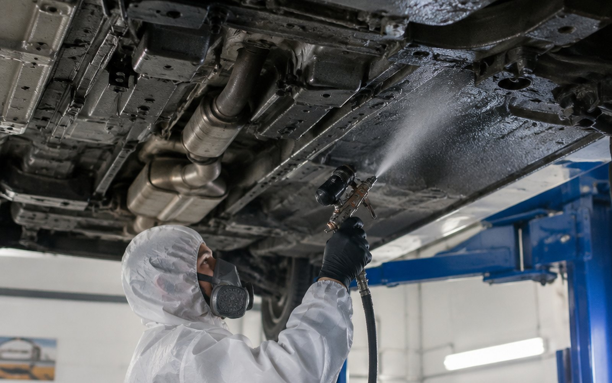
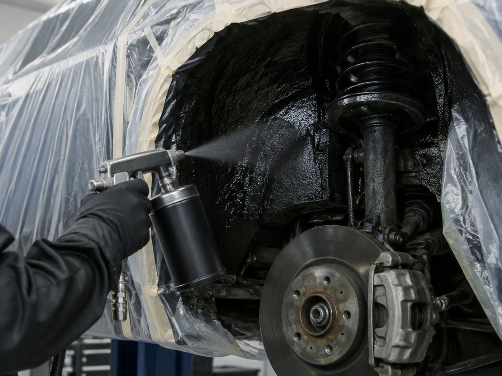
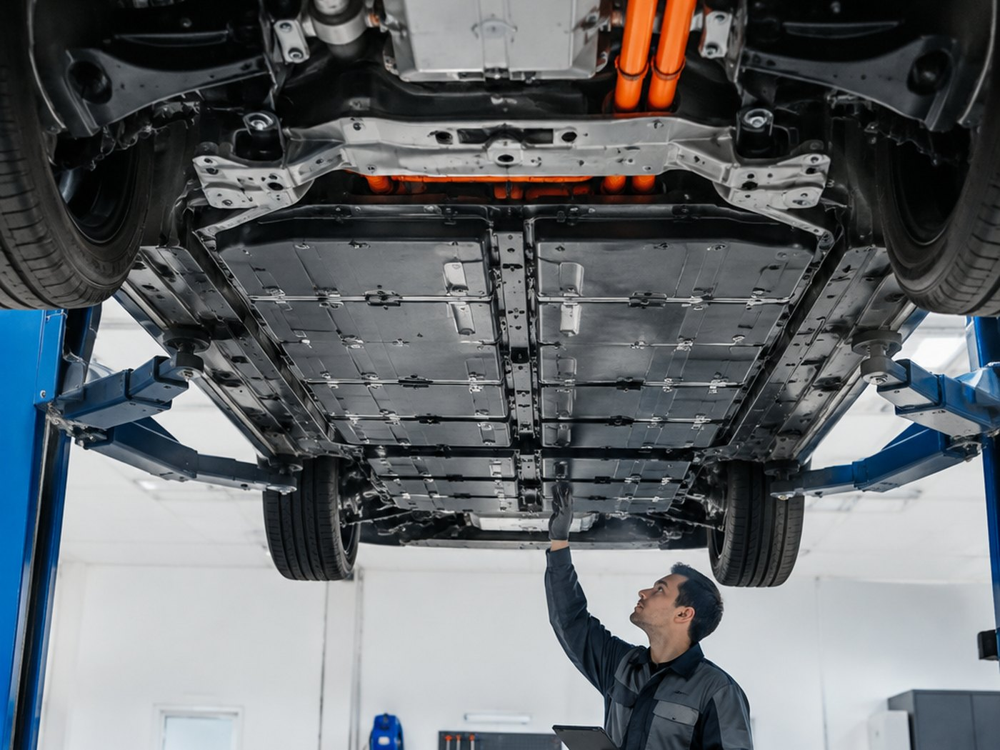

Днище, колёсные арки, пороги и скрытые полости. Сначала осмотр и согласованный объём работ, потом обработка. Защита от влаги и дорожных реагентов с фотоотчётом.


Объём работ подбираем по состоянию конкретного автомобиля и согласуем до начала обработки.
Мойка и сушка, обработка повреждённых участков по состоянию, затем состав Dinitrol по всей площади днища.
Снимаем локеры, обрабатываем арки и прилегающие кромки — там реагенты держатся дольше всего.
Обрабатываем пороги и проблемные кромки, где чаще всего начинается коррозия.
Лонжероны, стойки, внутренние полости дверей и капота — по согласованному перечню.
Проверяем дренажные отверстия, чтобы вода не оставалась в полостях после обработки.
Укрываем то, на что состав попадать не должен: тормоза, электрику, элементы подвески.
Плохо вымытое и сырое днище сводит на нет любой материал, поэтому подготовка у нас не «по остаточному принципу».
Отдельно берём китайские автомобили, электромобили и гибриды: Zeekr, BYD, LiXiang, Voyah, Geely, Belgee, Chery, Haval, Exeed, Changan, Omoda, Jaecoo, Tank и другие.
Напишите марку, модель, год выпуска и пробег — скажем, какие варианты обработки доступны и что входит в стоимость. Заявка откроется в WhatsApp с готовым текстом.
Позвоните: посмотрим днище и скажем честно, какие зоны обрабатывать, а какие трогать не нужно. Осмотр до работ, стоимость от 800 руб.